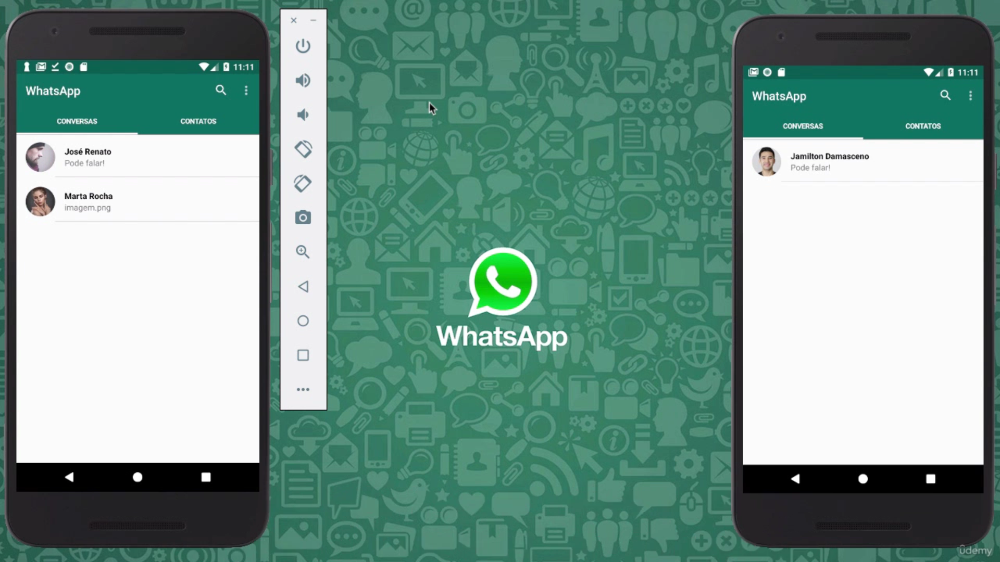

Galeria de Capturas de Tela
Veja algumas imagens do funcionamento do aplicativo:



Este projeto é um clone funcional do WhatsApp, inicialmente desenvolvido como parte do curso "Desenvolvimento Android Completo - Crie 18 Apps" de Jamilton Damasceno.
O curso pode ser acessado através do link abaixo:
Acesse o CursoInicialmente, o projeto foi desenvolvido em Java, mas estou migrando o código para Kotlin. Essa transição permitirá, no futuro, a substituição da interface XML pelo Jetpack Compose, proporcionando um código mais moderno, declarativo e eficiente.
Quando o curso foi criado, Kotlin ainda estava em desenvolvimento, e o Jetpack Compose provavelmente não existia. Por isso, estou atualizando o projeto para incorporar as melhores práticas da atualidade.
Além da migração para Kotlin, o projeto será aprimorado com:
Veja algumas imagens do funcionamento do aplicativo: